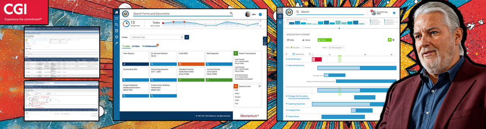

CGI Momentum: Transforming a Legacy System into a Modern, User-Centered Platform
Vision, leadership, and innovation at enterprise scale
Project Overview
- Client: CGI Momentum
- Role: Senior Product Designer
- Timeline: 2015-09 – 2017-11
- Team: 8 developers, 2 PMs, 2 designers, executive stakeholders
Tools & Methods
- Adobe
- Axure
- User Interviews
- Usability Testing
- Design Thinking Workshops
Starting Point
Before 2015, Momentum was a monolithic web app supporting complex federal/state accounting workflows. Years of feature creep created complexity, inconsistency, and performance drag—with no dedicated UX to guide the product.
- Redundant taxonomies and 5‑tier navigation; 3–7 related objects often took up to 4 clicks.
- Non‑standard form layouts/controls reduced task success.
- Performance bottlenecks across key screens.
- Low adoption and high support costs; stalled innovation.
Vision & Objectives
Reimagine Momentum as a modern, modular platform that streamlines workflows, cuts support tickets by half, and restores user trust—creating a sustainable foundation for growth and adaptability.
- Modernize on MVC with reusable modules.
- Reduce support tickets ≥50% via onboarding, search, and help.
- Establish consistent patterns/standards for usability.
- Increase flexibility with tabs, filters, and faceted search.
- Build trust with clear validation, errors, and status/queuing.
- Enable self‑service via doc repository, status, and a pattern library.
Leadership Moves
- Break silos: Facilitated cross‑functional workshops and SME interviews to create shared empathy maps and personas.
- Win executive buy‑in: Combined “speed‑listening” tours with support‑ticket analysis to build a data‑driven case for UX investment.
- Embed UX in culture: Introduced Lean UX metrics, biweekly critiques, and “Speed Testing” to hard‑wire feedback into releases.
Innovation in Action
- Discovery & Alignment: Identified 12 top pain points causing ~80% of friction.
- Prioritization & Roadmap: Built a phased backlog with design, product, and engineering.
- Rapid Prototyping: Adobe/Axure prototypes tested in short cycles; insights fed into sprint retrospectives.
- Systemization & Rollout: Migrated to a 508‑compliant React component library to future‑proof development.
Key Solutions
- Guided Onboarding & Contextual Help: Overlays, tooltips, and tutorials reduced new‑user errors by >50%.
- Advanced Search & Faceting: Cross‑library search by taxonomy/type/status with inline error handling; thousands of records accessible in seconds.
- User Dashboard: Unified tasks, alerts, deadlines, and quick links to minimize deep navigation.
- Enterprise Design System & Pattern Library: 508‑compliant React components (HTML/CSS/JS, icons, theming) integrated into legacy and new builds, with hi‑fi prototypes, user stories, and Confluence blueprints for consistent handoff.
Impact & Results
- Support Tickets: ~50% reduction via onboarding/help/error handling
- Delivery: On time and on budget with broad adoption
- Foundation: Multi‑brand React library seeded an enterprise design system
- Feedback Loop: Lean UX + “Speed Testing” sustained multi‑release improvements
Lessons Learned
- Scale innovation by building systems, not just screens.
- Use mid/high‑fidelity prototypes early to surface gaps and build trust.
- Anchor priorities in metrics, journeys, and SME insights.
- Maintain frequent executive touchpoints to keep momentum.
- Introduce change incrementally; co‑create to reduce risk.
Forward Look
- Establish a Design Standards Council for governance, cadence, and quality.
- Expand the design system with modular layouts, mobile variants, and richer dashboards/search/export.
- Pair product analytics with ongoing “Speed Testing” to validate impact.
- Run quarterly 508 reviews with automated and real‑user testing.